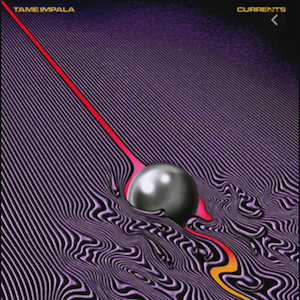

Curents - Tame Impala

October 5, 2020, Jacob Kurnat
The album titled “Currents” by the Australian artist Tame Impala is an album that I consider to be my favorite of all time. When Tame Impala is on stage, they are a group of extremely talented musicians. However, Tame Impala is really only made up of a single person named Kevin Parker. Parker writes, records, mixes and masters every element of every song you hear on this record. He does so in his own home-turned-recording-studio. This becomes a remarkable thing to think about when you listen to the album and hear all of its complexities and just how beautifully it is mixed. The album was released in 2015, and it is Tame Impala’s third album coming after their first two, Innerspeaker and Lonerism. The record starts off with a seven minute, forty-six second track titled “Let it Happen”, and this just so happens to be my favorite track on the entire record. The sounds of this track sound as though they almost shouldn’t even exist, as if they were created by some omnipotent being. It just doesn’t seem possible that any human could create a track like this. It is clearly evident that when Kevin Parker is making music, he meticulously spends un measurable amounts of time on each and every element, and this is something you can definitely hear in his music. Even just the high-hat sounds so crystal clear yet it is so mesmerizing, it’s almost as if you can taste the metal of the small cymbal as it reverberates in the song. A song I would compare Let it Happen to perhaps is Stairway to Heaven by Led Zeppelin. The song is almost 8 minutes long and has an almost linear progression. It starts fast and in your face, and I think this is deliberate. If you’re listening to this album for the first time, I promise that you’re not expecting what you’re going to hear in the first ten seconds. Despite the fast start, the track has breaks that paint quite the picture with beautiful synthesizers, yet heavy looming bass. Other elements in the track include a record-skipping type of bridge and loud, melodic synths with a melody that will be stuck in your head for days upon listening. You would think that with a track 1 that is this breathtaking, it would only go downhill from there on out. You would be wrong. The rest of the album is made with the same attention to detail and creative genius as Let it Happen, and it keeps you listening until the very end. The cool thing about Tame Impala is that they can do anything from heavily distorted, modulated guitar sounds to beautifully soft synth pads and melodies, while always laying them on top of a beautifully mixed, catchy, completely unique drum beat. I promise you if you listen to the album Currents by Tame Impala, you will not ask for that 51 minutes and 12 seconds of your life back. In fact, I might even go so far as to say you will spend many more 51 minute, 12 seconds periods listening to it again and again.